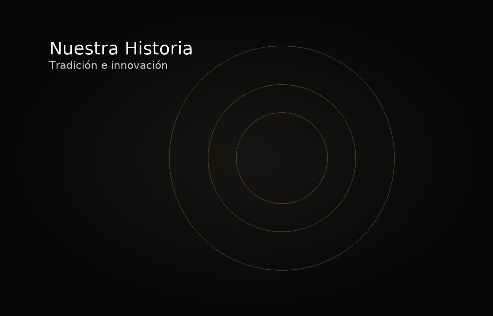
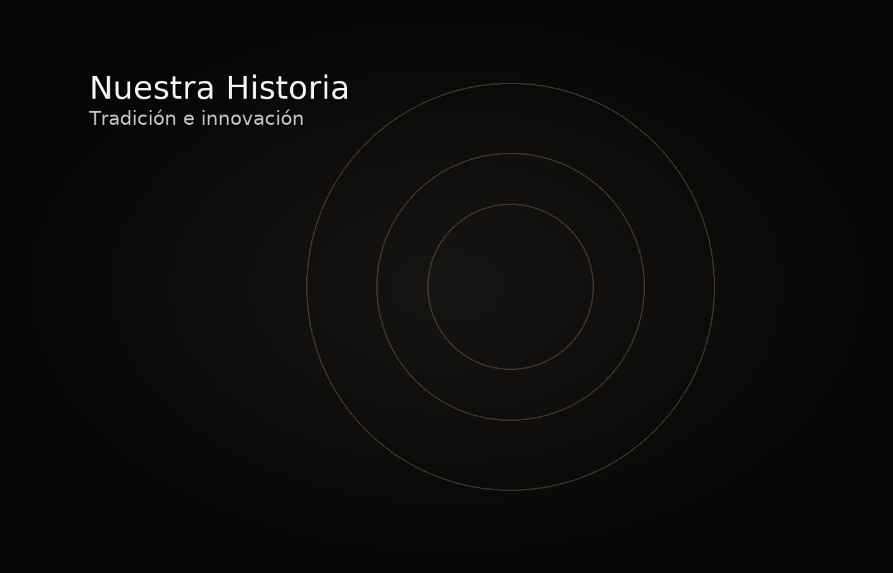

1970
Nueva era mecánica
LuxTime refuerza su identidad con calibres de alto rendimiento frente a la “crisis del cuarzo”.
Desde 1909, LuxTime ha combinado la tradición artesanal con la innovación suiza para crear relojes que trascienden generaciones.
LuxTime refuerza su identidad con calibres de alto rendimiento frente a la “crisis del cuarzo”.
Introducción de cajas en acero 316L y recubrimientos antirreflejo de nueva generación.
LuxTime abre boutiques propias en Madrid, Milán y Berlín consolidando su presencia internacional.
Lanzamiento de colecciones con certificación cronométrica y resistencia magnética mejorada.
Movimientos automáticos con componentes ligeros; mayor reserva de marcha y acabados premium.
Modelos con materiales reciclados, trazabilidad de cadena y líneas híbridas orientadas a eficiencia energética.
Diseñar relojes que inspiren confianza, precisión y distinción, preservando el legado relojero con materiales sostenibles.
Ser la marca referente en innovación elegante, integrando tecnología y artesanía para el futuro del tiempo.
Una mirada a los modelos y talleres que marcaron la evolución de LuxTime desde los años 70 hasta hoy.
 



Comprometidos con los más altos estándares de calidad suiza.
Fusión de tradición y tecnología para redefinir la precisión.
Uso responsable de materiales y procesos ecoeficientes.
Hoy LuxTime continúa expandiéndose hacia mercados globales, desarrollando relojes inteligentes sin perder su esencia clásica.